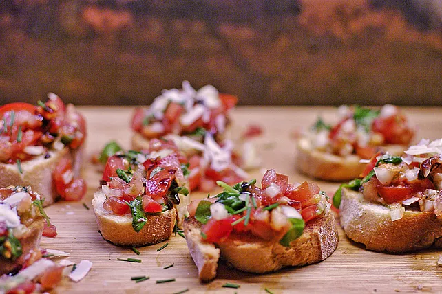

Italienische Bruschetta

Italienische Bruschetta mit Parmesan und Balsamico
Zutaten
- 10 große Tomaten
- 1 Zwiebel
- 1 Baguette
- Parmesan
- 1 Bund Basilikum klein gehackt
- Olivenöl
- Oregano
- 50ml Balsamico
- 50ml Rotwein
- 50ml Orangensaft
- 2EL Honig
- Salz und Pfeffer
Zubereitung
-
Entfernen Sie zuerst das Grünzeug der Tomaten gründlich und schneiden
Sie sie leicht ein. Geben Sie die bearbeiteten Tomaten in einen Topf mit
heißem Salzwasser (ggf. mit etwas Öl). Lassen Sie die Tomaten solange in
diesem Wasser, bis sich die Haut an den Schnittstellen löst. Nehmen Sie
die Tomaten nun aus dem Topf und lassen Sie diese abkühlen. Daraufhin
entfernen Sie die Schalen der Tomaten, welche sich durch das Erhitzen
vom Fruchtfleisch gelöst haben.
-
Nun werden die Tomaten halbiert und die Kerne und das weiche
Fruchfleisch beseitigt. Daraufhin schneiden Sie die Tomaten in kleine
Stückchen und geben diese in einen Sieb zum Abtropfen. Leisten Sie etwas
Nachhilfe, indem Sie leicht auf die Tomatenstücke eindrücken. Haben die
Tomaten nun die richtige Konsistenz erreicht (nicht zu wässrig), geben
Sie diese mit dem klein gehackten Basilikum, der Zwiebel und dem
Knoblauch in eine Schüssel. Nun ist der aufwendigste Teil geschafft.
-
Übergießen Sie die Masse nun mit einem Schuss Olivenöl und geben Sie
wahlweise die Gewürze hinzu. Nachdem Sie die Tomaten ein weiteres Mal
vorsichtig verrührt haben, können Sie die Balsamicocreme zubereiten.
Hierzu bringen sie unter ständigem rühren Balsamico und Rotwein zum
Kochen. Sobald die Masse dickflüssig ist, fügen Sie den Orangensaft und
den Honig hinzu. Lassen Sie das ganze nochmals aufkochen, bis es
dickflüssig ist und stellen Sie es zum Abkühlen zur Seite.
-
Schneiden Sie nun das Baguette in 2 cm dicke Scheiben und braten Sie
diese in einer Pfanne mit heißem Olivenöl auf beiden Seiten an, bis sie
goldbraun sind. Jetzt sollten Sie schnell die Tomatenmasse mit einem
Esslöffel auf die Brötchenteile geben, da sie sonst kalt und matschig
werden. Breiten Sie die kleinen Bruschette auf einem Teller aus und
verteilen Sie sie etwas. Nun Balsamicocreme auf ihnen verteilen. Zum
Schluss geben Sie noch etwas geriebenen Parmesan über die Teilchen und
garnieren Sie diese ggf. mit einem kleinen Basilikumblättchen. Bis das
geschafft ist, haben die Bruschette die richtige Temperatur zum Verzehr
erreicht.